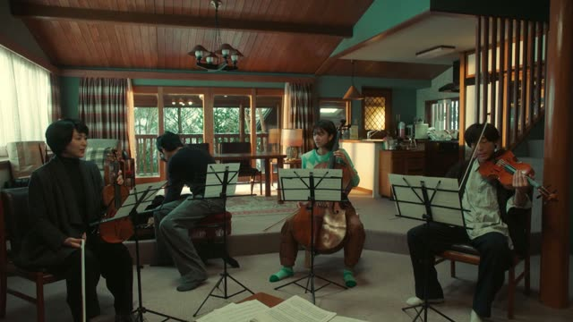

じゃない (Confirming)
| Polite | ～じゃないですか |
|---|---|
| Casual | じゃん young, very casual |
Same meaning: "isn't it?", "see?". Only the politeness changes.
Nothing to add, even after a verb or an い-adjective.
| Word | Add | Ending | ||
|---|---|---|---|---|
| Noun | 学生 | – | じゃん | See, he's a student! |
| な-adjective | 静か | – | じゃん | Hey, it's quiet! |
| Verb | 行く | – | じゃん | You're going, aren't you! |
| い-adjective | 高い | – | じゃん | Hey, that's expensive! |
Kekkon Dekinai Otoko · Episode 1
映画 見ても 同じじゃないですか
"Even watching a movie, it's the same, isn't it?" [on a date, you don't talk either way]
This じゃない isn't a negative. It means "isn't it?", "you know?": you point out something you think the other person sees too.
It goes after anything with nothing added: a noun, a verb (言ったじゃん), an adjective (すごいじゃん). The negative じゃない only follows nouns and な-adjectives, so after a verb or an い-adjective it's always this one. On this card, she says a movie date is no different from reading manga side by side: you don't talk.
Casual: じゃない, or the short じゃん.
Good Morning Call · Episode 9
言ったじゃん
"You said it!" [that you liked me]
じゃん is the short casual form, very common among young people. On this card, she reminds him of what he told her before: "you said it, didn't you!"
Quick Examples
Your friend said he can't cook, but dinner is great.
おいしいじゃん！
"Hey, this is good!"
CasualA coworker forgot the meeting you told him about.
昨日言ったじゃないですか。
"I told you yesterday!"
PolitePointing at a sign.
ほら、ここに書いてあるじゃない。
"Look, it says so right here."
Women and older speakers often say じゃない, young people じゃん.
CasualWith and without
学生じゃない。
He's not a student. The negative.
学生じゃん！
He's a student, see! You're pointing it out.
Examples from Media

Quartet · Episode 1
しょうがないじゃないですか
"It can't be helped, can it?"
He lied, so what else could you do? You expect the listener to agree.
Death Note · Episode 31
面白いじゃないですか
"That sounds interesting, doesn't it?"
After an い-adjective: nothing added.
Shirokuma Cafe · Episode 7
あっ！ 半田さんじゃないですか
"Oh! If it isn't Handa-san!"
Spotting someone: "oh, it's you!". Not "isn't Handa".
Goblin Slayer · Episode 8
好きにするって 言ったじゃないですか
"You said I could do as I liked, didn't you?"
言ったじゃないですか: "you said so yourself".
Aggretsuko · Season 1, Episode 2
すごいじゃん！
"That's great!"
すごいじゃん: praise, "hey, nice!".
Kotaro Lives Alone · Episode 3
優しいお兄ちゃんじゃん
"What a kind big brother!"
After a noun.
Vinland Saga · Episode 7
分け前 増えて よかったじゃん
"Bigger shares for you, lucky you."
よかったじゃん: "good for you!". Here it's cold: he thinks Thorfinn is dead.
The Way of the Househusband · Episode 4
わあ〜 めっちゃ可愛いじゃん
"Wow, that's so cute!"
めっちゃ: very (casual).
Further Reading
Tae Kim's Guide to Japanese Grammar
Casual Patterns and Slang · Using 「じゃん」 instead of 「じゃない」 to confirm